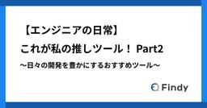
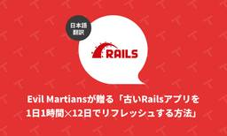
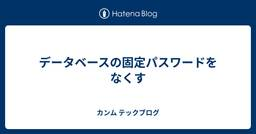
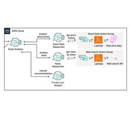
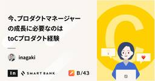

直近1週間の人気フィード
はてなブックマーク数を元に新着優先で並べ替え

【エンジニアの日常】これが私の推しツール！〜日々の開発を豊かにするおすすめツール〜 Part2 111
111 Findy Tech Blog
Findy Tech Blog
こんにちは。 突然ですが皆さんは、開発をするうえで欠かせないツールやOSSはありますか？ キーボードやマウス、マイクといった物理的なツールは机を見ればわかりますが、他のエンジニアがどういったツールを使って効率化しているかは、その人の画面を見ないとわかりません。 そのため、他のエンジニアがどういったツールを使って効率化しているのか、実は意外と知らないということが多いのではないでしょうか？ そこで今回は、大変ご好評いただきました【エンジニアの日常】これが私の推しツール！〜日々の開発を豊かにするおすすめツール〜 Part1の第二弾としまして、弊社エンジニア達が日々の開発業務で愛用しているツールやOS…
3日前
いかにしてココナラはCursor Businessを導入したのか? 〜生成AIツール導入のための社内調整術〜 98 株式会社ココナラさんのフィード
株式会社ココナラさんのフィード
はじめにこんにちは！！株式会社ココナラのエージェント開発部で Web エンジニアをしている、もちさんです。ココナラテックというフリーランス向けのエージェント事業サービスの開発をしています。この記事では、ココナラが生成 AI ツール Cursor のビジネスプランである「Cursor Business」を導入するまでの実践的なプロセスと具体的な成功事例、そして社内調整のためのノウハウを時系列とともに詳しくご紹介します。昨今、生成 AI ツールを活用した業務効率の向上は IT エンジニアにとって、もはや開発現場で避けて通れないテーマとなっています。しかし、「どのように上司を説...
2日前

Evil Martiansが贈る「古いRailsアプリを1日1時間✕12日でリフレッシュする方法」 33 TechRacho
TechRacho
概要 元サイトの許諾を得て翻訳・公開いたします。 英語記事: Railsmas on Mars: 12 Days of Mandatory Developer Joy and Challenge—Martian Chronicles, Evil Martians’ team blog 原文公開日: 2024/12/31 原著者: Svyatoslav Kryukov（バックエンドエンジニア）、Artur Petrov（バックエンドエンジニア）、Travis Turner （技術編集者） サイト: Evil Martians -- ニューヨークやロシアを中心に拠点を構えるRuby on Rails開発会社です。良質 […]The post Evil Martiansが贈る「古いRailsアプリを1日1時間✕12日でリフレッシュする方法」 first appeared on TechRacho.
7時間前

データベースの固定パスワードをなくす 52 カンム テックブログ
カンム テックブログ
プラットフォームチームの菅原です。 カンムのサービスで使われている各種アプリケーション（Goアプリ・管理アプリ・Redash等）では、データベースに接続する場合に一般的なパスワード認証を使っていることが多いです。 しかし、パスワード認証はパスワード漏洩のリスクやパスワード管理の手間があり、また要件によっては定期的なパスワードの変更も必要になってきます。 単純な方法で安全にパスワードをローテーションしようとすると、新しいDBユーザーを作成し、アプリケーションの接続ユーザーを変更し、さらに必要であれば元のDBユーザーのパスワードを変更して、接続ユーザーを元に戻す…などのオペレーションが必要になりま…
2日前

Amazon BedrockのMulti Agent Collaboration で高度なエージェント連携を実現 18 Taste of Tech Topics
Taste of Tech Topics
はじめに 最近OSSのLLMサービスが気になっているデータ分析エンジニアの木介です。 今回は2024年12月に発表された、Amazon Bedrockの「Multi Agent Collaboration」について実際にサンプルコードを動かしながら解説していきます。aws.amazon.com Multi Agent Collaborationとは 1. 概要 Multi Agent Collaborationとは、Amazon Bedrockが提供する新機能で、複数のAI Agentが協力してタスクをこなすことができる機能です。 AWS公式ブログにあったソーシャルメディアキャンペーンの例では…
12時間前
あなたのUI/UXレベルを上げるニッチなPackageたち。 49 SODA Engineering Blogのフィード
仕事や個人開発で作っているプロダクトのユーザー体験を1つ成長させるPackageを紹介します。「こんなpackageあります」とデザイナーに提案してみても良いかもしれません。!今回紹介するpackageは個人開発で使ってみたり、ローカルで動かしてみただけのものも含みます。使う際はパフォーマンスも考慮してお使いください。 Progressive blurでぼかしをうまく溶け込ませる soft_edge_blurProgressive blurとはぼかし効果を段階的に変化させる技術です。アプリライブラリなどで使われていますが、これによりアプリ一覧とApp barの境界線が...
3日前

今、プロダクトマネージャーの成長に必要なのはtoCプロダクト経験 39 inSmartBank
inSmartBank
こんにちは。スマートバンクでプロダクトマネージャーをやっているinagakiです。 最近プロダクトマネージャー（PM）のイベントに参加させていただく機会が増えてきているのですが、そのたびにtoCプロダクトのPMの方に出会わないな…と感じます。 どうやらtoCスタートアップへの投資総額が10年で下がり続けている話もあるそうです。個人の感覚的にも、もしやtoCプロダクトスタートアップの数が減っているのでは？と感じています（統計的にどうかは知りません）。 トップVCのC向けスタートアップへの投資額はこの10年で下がり続けて全体の6%しかないという衝撃の事実 pic.twitter.com/94RiC…
3日前
ID連携の導入パターンとMIXI IDの事例 33 MIXI DEVELOPERS Tech Blogのフィード
ritouです。今回は MIXI ID におけるID連携の導入について紹介します。 ID連携とその用途GoogleやApple, MicrosoftといったプラットフォーマーであったりX, FacebookといったSNSのユーザー情報を用いて別のサービスにログインできる仕組みのことをソーシャルログインと呼ばれています。これはデジタルアイデンティティの世界においてID連携(Identity Federation)と呼ばれている仕組みの一部です。Identity Provider(以下IdP)であるサービスのユーザー情報がRelying Party(以下RP)であるサービスに提供...
2日前
RIE と lambroll で始める Lambda の CI/CD 25 CyberAgent Developers Blog | サイバーエージェント デベロッパーズブログ
CyberAgent Developers Blog | サイバーエージェント デベロッパーズブログ
こんにちは。 AI 事業本部 AI クリエイティブディビジョンのエンジニアの佐藤 (@Rintaro ...
2日前
ニーリーにおけるリリーストグル運用改善のはなし 22 Nealle Developer's Blog
Nealle Developer's Blog
こんにちは。プラットフォーム開発チームの松村です。 はちゃめちゃに寒い今日この頃ですが、この時期に入浴剤をいれてお風呂に入るのが好きです。 泡が出るような固形タイプもいいですが、各地の温泉地とかがモチーフになってる昔ながらの（？）粉タイプが好きです。 にごり湯だとなおよし。 さて、今回はリリース管理のための仕組みであるリリーストグルの運用をどのように整備したかというお話をしようと思います。 先日の SRE Kaigi で弊社SREの宮後がした発表の中でも紹介がありましたが、ニーリーではリリースプロセス改善の一環でリリーストグルの運用改善に取り組みました。 この記事ではこの取り組みをもう少し掘り…
2日前
LINEヤフーのフロントエンド技術を明らかにするState of LY Frontend 2024実施レポート 22LINEヤフー Tech Blog
LINEヤフーでは、2024年の10月に社内のWebフロントエンド開発に携わる社内のメンバーを対象に、昨今のWebフロントエンド関連のトレンドや周辺ツールの利用状況について調査するアンケート「Stat...
3日前

Devinにコンテナイメージサイズを70%削減・デプロイ時間を40%削減してもらった話 152 LayerX エンジニアブログ
LayerX エンジニアブログ
こんにちは。LayerX AI・LLM事業部のエンジニア、Osukeです。普段は Ai Workforce のプロダクト開発に従事しています。 getaiworkforce.com 当事業部では、開発現場で役立つさまざまなAIツールを取り入れており、今回ご紹介するのはそのひとつ、Devin です。 Devinとは Devinは2024年12月に正式リリースされたエージェント型プロダクトで、GitHubやSlackなど、普段使い慣れたツールと連携して、まるでAIエンジニアがサポートしてくれるかのように開発タスクを自律的にこなします。 Slack上で指示を与えるだけで、Task Planningか…
7日前
データ駆動型回帰分析を実装してみた 16 Insight Edge Tech Blog
Insight Edge Tech Blog
はじめに 実装関連 まとめと感想 参考文献 はじめに こんにちは。InsightEdgeのデータサイエンティストの小柳です。 本記事では昨年発売された『データ駆動型回帰分析 計量経済学と機械学習の融合』の3、4章を実装しました。 普段ノンパラメトリック、セミパラメトリックなモデルを組むことがほとんどないため、練習のようなものですが読者の方の参考になるところがあるかもしれません。 どの手法が実装時に重たそうかはぱっと見だとわからないので、実装することにも意義ががあるかなと思いました。 実装内容は以下です。 3章 カーネルを使った回帰、Nadaraya-Watson回帰、Local-Polynom…
3日前

プロダクトマネージャーが売ったことのないプロダクトは（爆発的には）売れない 63 エムスリーテックブログ
エムスリーテックブログ
こんにちは、エンジニアリンググループプロダクトマネージャーの阪口です。 私は医師向けのアンケート調査やそのデータ分析を手掛けるリサーチプロダクトチームに所属し、チームのビジョン「データとテクノロジーを活用し、医療に関する意思決定とアクションを、無駄なく、正しく、最速にする」を実現するため、日々奮闘しています。 この記事では、あるプロダクトのリニューアルにて自らがセールス活動に奔走することで得ることができた学びを共有したいと思います。 プロダクトリニューアルの背景 クライアントからの評価と課題 俺は最強のセールスになる！ 1.顧客の解像度が上がり、売れるためのメッセージが見つかった 2.プロダク…
7日前

はてなアイコンの裏側の紹介 CloudflareとHonoX 62 Hatena Developer Blog
Hatena Developer Blog
先日、はてラボで「はてなアイコン」をリリースしました。普段はスマートフォンアプリを書いていることが多い id:kouki_dan です。 labo.hatenastaff.com サービスの紹介はリリース時のエントリを参照してください。このエントリでは技術的な裏側の紹介をしていきます！ Cloudflareスタックを試したかった 2年くらい前に、Cloudflare D1などが発表されて盛り上がっていた頃、Cloudflareを使ってなんか作りたいな〜と思っていました。はてなの社内には自由研究用のリソースとして、AWS, Google Cloudをはじめ、様々なクラウドサービスを特段の申請不要…
5日前

EDRはどうやって不審な挙動を発見するのか？ 47 株式会社ココナラさんのフィード
株式会社ココナラの情報システムグループ CSIRTチームのテトロドナです。本記事では、EDRはどのようにして敵対的な行動を見つけるのかを解説していきます。 はじめにEDRとは、EDRはEndpoint Detection and Responseの頭文字をとった語で、従来の（とはいってもEDRの概念が初めて世に出たのがすでに結構前の話ではありますが）アンチウイルスソフトウェアと異なり、各エンドポイントの詳細なログを収集・分析することで、脅威が侵入した際の被害拡大を防ぐセキュリティソリューションの総称です。従来のセキュリティ製品との違いとしては、既知のマルウェアのシグネチャや挙動...
6日前

「顧客志向のSaaS開発組織」であり続けるための取り組み 46 RAKUS Developers Blog | ラクス エンジニアブログ
RAKUS Developers Blog | ラクス エンジニアブログ
はじめに プロダクトをつくる私たちエンジニアや組織は 「本当に顧客のために開発できているだろうか？」 と、一度は自問したことがあるのではないでしょうか。 事業成長し、組織が大きくなるにつれ、エンジニアと顧客の距離は遠くなりがちです。 かつては直接届いていた「この機能、助かりました」「ここが使いづらい」といった顧客の生の声も届きづらくなります。 複数チームでの分業や、多くのステークホルダーが関わる場合、このように感じる方もいるのではないでしょうか。 こうした環境下では、 「リリースした機能は、本当に役に立ったのだろうか？」 「顧客はどんな機能をよく使い、どんな課題に直面しているのだろうか？」 「…
7日前

食べログAndroidアプリの自動テスト戦略 40 Tabelog Tech Blog
Tabelog Tech Blog
こんにちは。食べログでAndroidアプリのテックリードをしているsadaです。 今回は食べログAndroidアプリの自動テスト戦略についてご紹介したいと思います。 目次 そもそもテストコードはなぜ必要なのか テストコードにおいて大事なこと 自動テストの信頼性 できるだけ早い段階で検出する 継続的な保守 食べログAndroidアプリの自動テスト戦略 テストコードを書く文化を根付かせる 一番欲しいフィードバックを考える バランスよく積み上げられる 実際進めてどうなったか まずはSmallテスト主軸に 次にMediumテストでカバー範囲を広げる 今後の展望 Largeテストを作り、手動テストを減ら…
6日前

Ruby on RailsでUIコンポーネント構築を効率化、ユーザ体験の仮説検証ループを爆速で回しちゃうぞ！ 37 Techouse Developers Blog
Techouse Developers Blog
今日は、ジョブハウスで使用している Ruby on Rails の ViewComponent を用いて UI コンポーネントを実装する際に利用しているライブラリを紹介します。ViewComponent（UI コンポーネント）× Lookbook（プレビュー）× rspec-snapshot（スナップショットテスト）という、フロントエンドエンジニアには馴染みのあるようなエコシステムを、Ruby on Rails 上で実現しています。
5日前

ラクスのプロダクトデザイン組織紹介― 顧客価値を高める新たな挑戦 36 RAKUS Developers Blog | ラクス エンジニアブログ
はじめに ラクスのプロダクトデザイン組織マネージャーの小林です。 私たちの所属する「プロダクトデザイン課」は、お客様の業務課題を解決すべく、全プロダクトのUI/UXデザインを担うチームです。 2025年、プロダクトデザイン課はお客様への価値提供をより一層高めるため、新たな挑戦に踏み出します。 そこで改めて組織紹介も兼ね、ミッション・ビジョン、これまでの歩み、現在取り組んでいること、今後の挑戦についてお話したいと思います。 はじめに プロダクトデザイン課のミッション・ビジョン ミッション・ビジョン策定に至る経緯 顧客理解を高めるデザイナーの取り組み 顧客ニーズを踏まえ主体的な提案も増える UI刷…
5日前

まさにコストカット祭り - GPUサーバー代を約30%削減した話 - 31 ACES エンジニアブログ
ACES エンジニアブログ
こんにちは！ACES でソフトウェアエンジニアをしている西川（@kotosearch）です。 今回は「まさにコストカット祭り - GPUサーバー代を約30%削減した話 -」と題して、高くつきがちな GPU サーバーに焦点をあてて、実際に私たちがコストカットに成功した Tips を皆さんにご紹介したいと思います。 前提として ACES は上場を目指しており、事業の健全性や採算性が求められる中で、予実の達成は不可避です。喫緊の課題として原価通信費（サーバー代など）の増大が上がっており、こちらを削減することが至上命題でした。 1年ほど前の話にはなりますが、2024年2-3月ごろにかけて行ったコスト削…
6日前

モノリスの継続的改善を支える、GitHub Copilot WorkspaceとCopilot code review (旧for Pull Request) 22 stmn tech blog
stmn tech blog
Ruby on Railsモノリスアプリの継続的改善を支える、GitHub Copilot WorkspaceとCopilot code review (旧for Pull Request)
5日前

中央集権から自律分散型のデータ管理へ〜モノタロウにおけるアナリティクスエンジニアリング〜 19 MonotaRO Tech Blog
MonotaRO Tech Blog
アナリティクスエンジニアリンググループのマネージャーをしている吉本です。 モノタロウでは昨年7月よりアナリティクスエンジニアリンググループを立ち上げ、データ管理をより高度にするための取り組みを始めております。 今回はモノタロウにおいてアナリティクスエンジニアリンググループができた背景と取り組みについて紹介いたします。 またこの記事を読んでモノタロウのアナリティクスエンジニアリングに興味がある！詳しい話を聞きたいと思ったかたは2/13にイベントを開催いたしますのでぜひご参加ください！ monotaro.connpass.com データ活用と管理の歴史 各業務におけるデータ管理の課題 各業務の指標…
6日前

もう一度学び直すStorybook 6 アルダグラム Tech Blogのフィード
みなさんこんにちは！株式会社アルダグラムでエンジニアをしている大木です。今回は、Storybook を学び直していこうかなと思います。現在弊社ではStorybookを利用しており、レビューやデザイナーとの連携で活用しています。特に何かに困っているわけでもないのですが、もっとうまく使いこなせないのかなぁと考えていたところでした。今までは6系を使っていたのですが、とあるチームが8系へのアップデートの作業をしてくださいました(ありがたい限りです)。 そういったキャッチアップのためにも学び直しをしていこうかと思います。 インストールインストールに関しては以下のページが参考になるかと思い...
7日前

Rails: Hotwire Nativeでネイティブモバイルアプリを作ろう: iOS編パート1（翻訳） 5 TechRacho
概要 原著者の許諾を得て翻訳・公開いたします。 英語記事: Hotwire Native iOS Part 1 | William Kennedy 原文公開日: 2025/01/31 原著者: William Kennedy 日本語タイトルは内容に即したものにしました。 従来Turbo NativeとStradaと呼ばれていたものは、現在はHotwire Nativeに統合されました。 参考: Hotwire Native: Hotwire Native is a web-first framework for building native mobile apps. Rails: Hotwire Nativeで […]The post Rails: Hotwire Nativeでネイティブモバイルアプリを作ろう: iOS編パート1（翻訳） first appeared on TechRacho.
6日前

LLM x SRE: メルカリの次世代インシデント対応 5 メルカリエンジニアリングブログ
メルカリエンジニアリングブログ
株式会社メルカリのPlatform Enablerチームで新卒エンジニアとして働くTianchen Wang (@Amadeus)です。今回は、Large Language Model (LLM)を利用してフリマアプリ「 […]
6日前

マニュアルテストどこまでやるか？ 責務範囲を相対的に考える 4 SmartHR Tech Blog
SmartHR Tech Blog
こんにちは！QAエンジニアのmachiです。 活動の現場を開発チームの内外問わず、品質について考え、活動しています。 品質活動をしていく中で、「マニュアルテストをどこまでやればよいかわからない」という声をよく耳にします。例に漏れず、SmartHRの開発チームからも同様の声を聞きます。 そういった背景から、自分たちの現時点の考えを言語化する試みをしたので、品質保証部連載第9弾としてその内容をお伝えしようと思います。 本記事では、まず話の発端であるマニュアルテストの責務範囲について述べ、続けてそこに至った考え方や、他のテストについて書いていきます。 責務範囲の割り出し マニュアルテストだけで考える…
6日前

Rails: データベース変更をリアルタイム＆低予算でユーザーにブロードキャストする（翻訳） 3 TechRacho
概要 元サイトの許諾を得て翻訳・公開いたします。 英語記事: Broadcasting real-time database changes on a budget | justin․searls․co 原文公開日: 2024/08/04 原著者: Justin Searls -- Test Doubleの共同創業者です 日本語タイトルは内容に即したものにしました。 Rails: データベース変更をリアルタイム＆低予算でユーザーにブロードキャストする（翻訳） 私がBeckyの筋トレビジネス用のアプリ（まだリリースしていません）を構築しているときには、アプリをサーバーサイドとクライアントサイドに分けずに動的なフロン […]The post Rails: データベース変更をリアルタイム＆低予算でユーザーにブロードキャストする（翻訳） first appeared on TechRacho.
5日前

外部からWebhookを受ける共通基盤 3 LayerX エンジニアブログ
バクラク事業部Platform Engineering部の id:itkq です。LayerXでも1月からバクラク勤怠を運用開始しましたが、初めての月次締めは最速で終わったとのことでした。めでたいですね。 さて、この記事では1年ほど前から運用している、外部からWebhookを受ける共通基盤 (external-webhook) について紹介します。 この基盤がする仕事 主にターゲットとするWebhookは、利用している外部サービス経由のものです。現在サポートしているサービスは以下です。 SendGrid https://sendgrid.kke.co.jp/docs/API_Reference…
5日前

Vue.js のソースコードを読んでみよう（ref/reactive 編） 3 VISASQ Dev Blog
VISASQ Dev Blog
はじめに こんにちは、エキスパート/lite 開発の中原です！ ビザスクでは主に Vue.js を使用してフロントエンド開発を行っています。 みなさんは Vue.js がどのように実装されているか意識したことはありますでしょうか？ ライブラリを使う時その裏でどんな処理がされているのか正しく理解していないと、意図した挙動をしてくれなかったり、思わぬところでバグが発生することがあります。 今回は Vue.js のリアクティブ機能を実現する ref() と reactive() に焦点を当て、実際のソースコードを読みながら内部動作を理解していきたいと思います。 ref() まずは ref() のコー…
6日前

コード品質向上のテクニック：第57回 百見は一 fetch にしかず 3LINEヤフー Tech Blog
こんにちは。コミュニケーションアプリ「LINE」のモバイルクライアントを開発している石川です。この記事は、毎週木曜の定期連載 "Weekly Report" 共有の第 57 回です。 LINEヤフー...
7日前